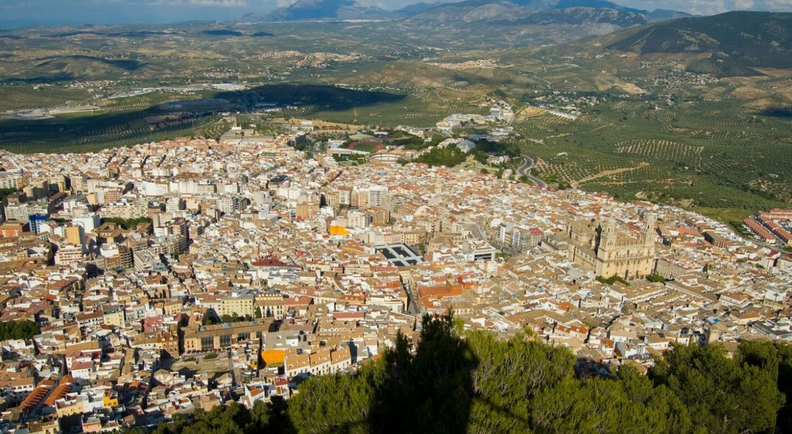

Jaén es una ciudad y municipio español de la comunidad autónoma de Andalucía, capital de la provincia homónima. Ostenta el título de «Muy Noble y Muy Leal Ciudad de Jaén, Guarda y Defendimiento de los Reinos de Castilla» y es conocida como la «capital del Santo Reino».
Se alza al pie del cerro de Santa Catalina, con calles empinadas y de pronunciadas pendientes que definen su urbanismo, ensanchándose hacia las zonas más llanas y amplias de los nuevos barrios y bulevares. En sus alrededores abundan fértiles tierras de cultivo, y extensos olivares que cubren gran parte de su término. Hacia el sur y el sureste se encuentran las sierras de Jaén y Jabalcuz, y al norte se abre el llano del río Guadalbullón, que pasa a muy corta distancia de la ciudad.
Debido a su situación, Jaén ha tenido una gran importancia estratégica, habiéndose encontrado en su núcleo urbano varios de los asentamientos humanos más antiguos de Europa. Del mismo modo, tuvo gran importancia en la historia de al-Ándalus y del Reino de Castilla.
Su riqueza cultural se debe al importante papel histórico que ha tenido esta ciudad desde la antigüedad, ya que han pasado distintas culturas como los íberos, romanos, visigodos, musulmanes y cristianos.
La actividad económica más importante de la provincia de Jaén es la producción de aceite de oliva, siendo la mayor productora mundial, lo cual queda patente bajo el lema que recibe la ciudad, como «Capital mundial del aceite de oliva».2 En este sentido, la ciudad alberga desde el año 1983 y de forma bienal Expoliva, una feria internacional de referente mundial dedicada al sector del aceite de oliva e industrias afines, celebrada actualmente en la Institución Ferial de Jaén. No obstante, la economía también está basada en el sector servicios, la administración, la industria agrícola y alimentaria, la construcción, y un incipiente turismo cultural.
Entre su patrimonio histórico-artístico cabe destacar la catedral de la Asunción de la Virgen, el castillo con sus tres alcázares, los Baños Árabes y el emblemático Monumento a las Batallas, situado en la céntrica Plaza de las Batallas, que conmemora la batalla de Las Navas de Tolosa y la batalla de Bailén, ambas acaecidas en la provincia de Jaén.
La arquitectura religiosa de la ciudad de Jaén es muy variada y por cada rincón de la ciudad encontrarás alguna maravilla arquitectónica, por lo que te aconsejamos que pasees por la ciudad con los ojos bien abiertos.
Las fiestas populares más representativas de Jaén son las «Lumbres de San Antón», que se celebran la noche del 16 al 17 de enero. Durante esa noche se corre la Carrera Urbana Internacional Noche de San Antón. En octubre se celebra la feria de San Lucas. Su origen data del siglo XIV, siendo su día grande el 18 de octubre. Especial mención tiene la Semana Santa de Jaén, declarada Fiesta de Interés Turístico Nacional, teniendo gran expectación la procesión de «El Abuelo», durante la madrugada del Viernes Santo.
En la actualidad algunos proyectos a realizar en la ciudad son la finalización del sistema tranviario y cercanías del área metropolitana, el Museo Internacional de Arte Íbero, la construcción de las infraestructuras necesarias para la conexión ferroviaria con trenes de AVE o la restauración del Convento de Santo Domingo.